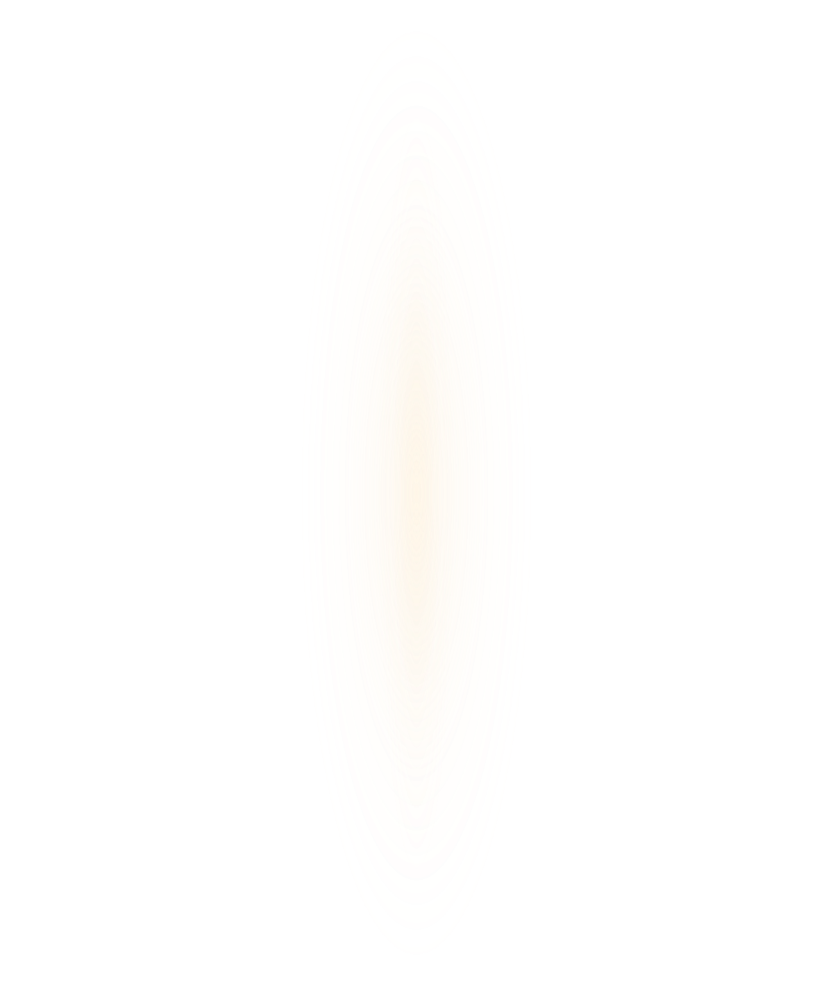

<!doctype html><html lang="ko"><meta charset="utf-8"><meta name="viewport" content="width=device-width,initial-scale=1"><title>PrayTime · 틈 레이어</title><style>*{box-sizing:border-box}body{margin:0;background:#111522;color:#f4f1ec;font:16px system-ui}main{max-width:1100px;margin:30px auto;padding:24px;display:grid;grid-template-columns:minmax(0,600px) 1fr;gap:32px}.stage{position:relative;aspect-ratio:5/6;background:repeating-conic-gradient(#1d2232 0 25%,#252b3c 0 50%) 0/24px 24px}.stage img{position:absolute;width:100%;height:100%;inset:0}h1{font-size:24px}p{line-height:1.7;color:#c8c8cf}label{display:block;margin:22px 0}input{accent-color:#FF4438}small{color:#a9a9b6}@media(max-width:700px){main{grid-template-columns:1fr;margin:0;padding:16px}.stage{max-height:75vh;width:auto;max-width:100%;margin:auto}}</style><main><div class="stage"></div><aside><h1>틈 · 레이어 분리</h1><p>각 레이어를 끄고 켜서 분리 상태를 확인하세요. 배경을 끄면 투명 영역이 보입니다.</p><label><input type="checkbox" data-layer="01-background" checked> 배경</label><label><input type="checkbox" data-layer="02-opening" checked> 틈 내부</label><label><input type="checkbox" data-layer="03-edges" checked> 빛의 테두리</label><label><input type="checkbox" data-layer="04-ambient" checked> 주변 광채</label><label><input type="checkbox" data-layer="05-floor" checked> 바닥 빛</label><p>중앙 틈 폭 14 / 전체 폭 1200<br>390px 화면에서는 약 4.6px</p><small>2단계 정지 화면입니다.<br>애니메이션은 아직 연결하지 않았습니다.</small></aside></main><script>document.querySelectorAll('input').forEach(el=>el.addEventListener('change',()=>{document.getElementById(el.dataset.layer).style.visibility=el.checked?'visible':'hidden'}));</script></html>